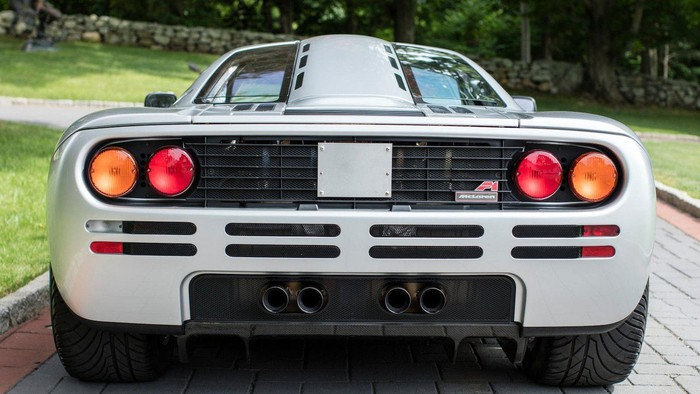

siêu xe McLaren đắt nhất thế giới
McLaren, được sáng lập vào năm 1963 bởi Bruce McLaren (1937-1970), là một đội đua nước Anh, vốn nổi tiếng nhất ở lĩnh vực đua xe Công thức 1 nhưng cũng tham gia tại Indianapolis 500-Mile Race, Canadian-American Challenge Cup và 24 Hours of Le Mans. Tên đầy đủ của đội hiện nay là Team McLaren Mercedes nhưng kể từ tháng 1 năm 2007 sẽ được đổi thành Vodafone McLaren Mercedes theo một bản hợp đồng tài trợ lớn từ hãng truyền thông Vodafone được thông báo từ tháng 12 năm 2005. Hiện nay người điều hành đội đua là Ron Dennis, dưới sự lãnh đạo của McLaren Racing, một thành viên của McLaren Group.Năm 1990 McLaren Cars được thành lập để phục vụ cho việc sản xuất xe hơi thông dụng dựa trên chuyên môn sẵn có từ các cuộc đua xe.McLaren là một trong những đội đua thành công nhất ở Công thức 1, có nhiều chiến thắng hơn bất kỳ đội đua nào khác trừ Ferrari, đồng thời cũng sở hữu rất nhiều chức vô địch cá nhân và đồng đội tại F1. McLaren tổng cộng có 11 chức vô địch cá nhân và 8 chức đồng đội kể từ năm 1966.
1. McLaren F1
Một chiếc McLaren F1 đã trở thành siêu xe đắt nhất trong lịch sử của hãng khi nó được bán với giá 15,62 triệu USD (khoảng hơn 351 tỷ đồng) tại Mỹ.
Trong thời kỳ kinh tế khó khăn, các nhà đầu tư không còn "mặn mà" vào các kênh chứng khoán, bất động sản hay kim loại quý thì việc đầu tư vào các món đồ cổ và nghệ thuật luôn là sự lựa chọn hàng đầu. Một phần nguyên nhân đó đã khiến những chiếc siêu xe cổ ngày càng lên ngôi và trở thành một danh mục đầu tư được nhiều người đổ tiền với hy vọng giá sẽ tiếp tục lên cao.
